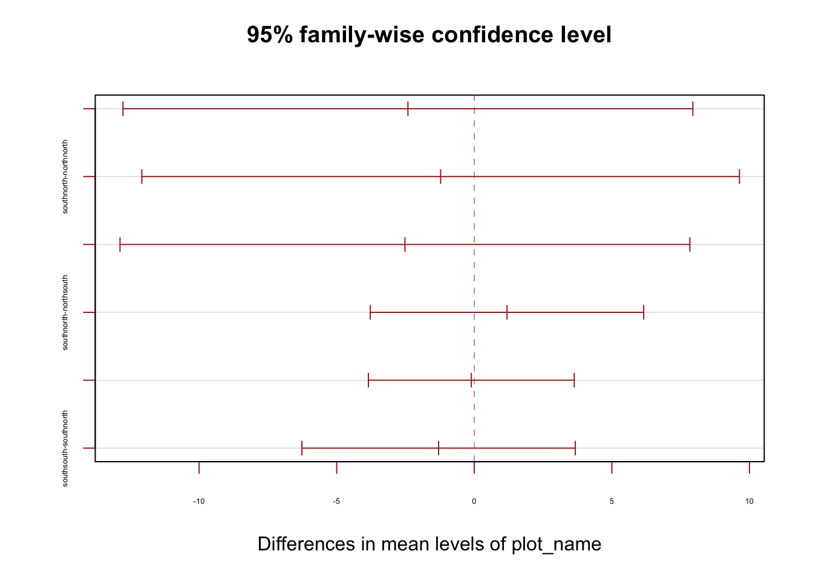

dat_2015 <- read.csv("https://raw.githubusercontent.com/elisefeld/elise_data_dump/main/Combined_2015_data.csv") |>
clean_names() |>
mutate(across(everything(),
str_remove_all,
pattern = fixed(" "))) |> #remove spaces in data
mutate(across(where(is.character),
~na_if(., "null"))) |> #add null vals for chrs
mutate(across(c(tree_number,
subplot),
as.character)) |> #convert to chr datatype
mutate(across(c(plot_year,
plot_month,
height,
dbh),
as.numeric)) |> #convert to numeric datatype
rename(dbh_2015 = dbh,
note_2015 = note,
plot_month_2015 = plot_month) EREN Research Project Analysis
ggplot
BIO 261: Ecological Principles
Statistical Analysis and Visualization for EREN Plot Data
This analysis comapres EREN plot data collected by BIO 261’s lab groups in 2024 to historical data from 2015, focusing on the growth and health of tree species within various ecological plots. The dataset includes measurements from 2015 and 2024, allowing us to examine changes over nearly a decade. The analysis includes data cleaning, data transformations, statistical tests, and visualizations to explore relationships between tree characteristics and plot conditions.
Data Preparation and Cleaning
We start by importing and cleaning the datasets from 2015 and 2024 by removing spaces, handling null values, and standardizing data formats.
Cleaning 2015 Data
Cleaning 2024 Data
dat_2024 <- read.csv("https://raw.githubusercontent.com/elisefeld/elise_data_dump/main/Combined_2024_data.csv") |>
clean_names () |>
select(-group) |>
mutate(across(everything(),
str_remove_all,
pattern = fixed(" "))) |> #remove spaces in data
mutate(across(where(is.character),
~if_else(. %in% c("",
"unidentified",
"Dead/Missing",
"null",
"na",
"NA",
"Na"),
NA_character_, .))) |> #add null vals for chrs
mutate(plot_month = str_replace(plot_month, "September", "9"),
plot_name = str_replace_all(plot_name, c("_" = "",
"Plot4" = "southsouth",
"4" = "southsouth",
"northeast" = "northnorth",
"notheast" = "northnorth")),
plot_name = str_to_lower(plot_name)) |> #standardizes plot_name & plot_month cols
mutate(across(c(height,
dbh),
na_if, "0")) |> #add null vals for nums
mutate(dbh = na_if(dbh, "61.5")) |> #REMOVING OUTLIER DBH
mutate(across(c(height,
dbh,
plot_year,
plot_month),
as.numeric)) |> #convert to numeric datatype
mutate(across(c(height,
dbh),
round, 2)) |> #round values to 2 decimal places
rename(dbh_2024 = dbh,
note_2024 = note,
height_2024 = height,
plot_month_2024 = plot_month) Preparation and Joining
The cleaned datasets are further processed to combine duplicated measurements for each tree, calculate growth rates, and identify dead trees. This allows for easy comparison of changes between 2015 and 2024.
#averaging trees that were measured more than once in each data set
dat_2015_new <- dat_2015 |>
group_by(plot_name,
tree_number) |>
mutate(plot_month_2015 = Mode(plot_month_2015),
dbh_2015 = mean(dbh_2015,
na.rm = TRUE)) |> #taking the mean dbh of all trees with the same plot name and tree number
distinct(tree_number,
.keep_all = TRUE) |>
select(-plot_year,
-plot_month_2015)
dat_2024_new <- dat_2024 |>
group_by(plot_name,
tree_number) |>
mutate(plot_month_2024 = Mode(plot_month_2024),
dbh_2024 = mean(dbh_2024,
na.rm = TRUE),
height_2024 = mean(height_2024,
na.rm = TRUE)) |> #taking the mean dbh and height of all trees with the same plot name and tree number
distinct(tree_number,
.keep_all = TRUE) |>
mutate(across(where(is.numeric),
~na_if(., NaN))) |> #changing not a number to NA
select(-plot_year,
-plot_month_2024)Joining & Creating New Variables
dat_all <- dat_2024_new |>
left_join(dat_2015_new,
by = c("plot_name",
"subplot",
"tree_number")) |>
select(plot_name,
subplot,
tree_number,
species_code.y,
dbh_2015,
dbh_2024,
height_2024,
note_2015,
note_2024,
inv_status,
stemtype,
soundness,
crownclass,
treedamage) |>
rename(species_code = species_code.y) |>
mutate(treedamage = str_to_upper(treedamage),
growth_factor = (dbh_2024 - dbh_2015) / 9, #create growth factor col, 2024-2015/9yrs
dead_2015 = note_2015, #copy col
dead_2024 = note_2024) |> #copy col
mutate(dead_2015 = case_when(str_detect(dead_2015, "lvsgone") ~ "DEADNOLEAVES",
str_detect(dead_2015, "noleavesleft") ~ "DEADNOLEAVES",
str_detect(dead_2015, "leavesgone") ~ "DEADNOLEAVES",
str_detect(dead_2015, "fewleaves") ~ "DEADNOLEAVES",
str_detect(dead_2015, "leavesallgone") ~ "DEADNOLEAVES",
str_detect(dead_2015, "mostleavesgone") ~ "DEADNOLEAVES",
str_detect(dead_2015, "dead") ~ "DEAD",
TRUE ~ dead_2015)) |> #if contains left, convert to right
mutate(dead_2015 = replace(dead_2015,
!grepl("DEAD", dead_2015),
"NODATA")) |>
mutate(dead_2024 = case_when(str_detect(dead_2024, "noleaves") ~ "DEADNOLEAVES",
str_detect(dead_2024, "dead") ~ "DEAD",
str_detect(dead_2024, "missing") ~ "DEAD",
str_detect(dead_2024, "Gone") ~ "DEAD",
str_detect(dead_2024, "Dead") ~ "DEAD",
str_detect(dead_2024, "deceased") ~ "DEAD",
TRUE ~ dead_2024)) |> #if !contain DEAD, convert to NODATA
mutate(dead_2024 = replace(dead_2024,
!grepl("DEAD", dead_2024),
"NODATA")) |> #if !contain DEAD, convert to NODATA
mutate(species_name = as.factor(species_code),
species_genus = as.factor(species_code)) |>
mutate(species_name = fct_recode(species_name,
"Amur Maple" = "ACEGIN",
"Boxelder" = "ACENEG",
"Red Maple" = "ACERUB",
"Sugar Maple" = "ACESAC",
"Bitternut Hickory" = "CARCOR",
"American Ash" = "FRAAME",
"Black Walnut" = "JUGNIG",
"Eastern Hophornbeam" = "OSTVIR",
"Bigtooth Aspen" = "POPGRA",
"Black Cherry" = "PRUSER",
"Chokecherry" = "PRUVIR",
"White Oak" = "QUEALB",
"Bur Oak" = "QUEMAC",
"Red Oak" = "QUERUB",
"Common Buckthorn" = "RHACAT",
"American Basswood" = "TILAME",
"American Elm" = "ULMAME")) |> #create new col species_name
mutate(species_genus = fct_collapse(species_genus,
Acer = c("ACEGIN", "ACENEG", "ACERUB", "ACESAC"),
Caryus = c("CARCOR"),
Fraxinus = c("FRAAME"),
Juglans = c("JUGNIG"),
Ostrya = c("OSTVIR"),
Populus = c("POPGRA"),
Prunus = c("PRUSER", "PRUVIR"),
Quercus = c("QUEALB", "QUEMAC", "QUERUB"),
Rhamnus = c("RHACAT"),
Tilia = c("TILAME"),
Ulmus = c("ULMAME"))) |> #create new col species_genus
mutate(plot_name_num = case_when(str_detect(plot_name, "northnorth") ~ 2,
str_detect(plot_name, "northsouth") ~ 1,
str_detect(plot_name, "southnorth") ~ 3,
str_detect(plot_name, "southsouth") ~ 4,)) |> #plot name chr to numeric
mutate(hl_density = case_when(str_detect(plot_name, "northnorth") ~ "Low Density",
str_detect(plot_name, "northsouth") ~ "Low Density",
str_detect(plot_name, "southnorth") ~ "High Density",
str_detect(plot_name, "southsouth") ~ "High Density")) |> #new col plots high or low density
mutate(species_name = as.factor(species_name))Pivoting for Visualization
dat_all_pivot <- dat_all |>
pivot_longer(cols = starts_with("dbh_"),
names_to = "year",
values_to = "dbh",
names_prefix = "dbh_")#How many of each species are in each plot?
tbl1 <- table(dat_all$species_name, dat_all$plot_name)
tbl1
northnorth northsouth southnorth southsouth
American Ash 3 43 18 45
Bur Oak 24 1 0 0
Bigtooth Aspen 1 0 0 0
White Oak 18 1 0 0
Red Oak 2 0 1 0
Sugar Maple 8 5 0 2
American Basswood 4 0 0 0
American Elm 5 3 0 0
Bitternut Hickory 1 0 0 0
Chokecherry 1 1 0 0
Black Cherry 1 1 0 0
Black Walnut 0 3 13 7
Boxelder 0 5 4 2
Eastern Hophornbeam 0 5 0 0
Common Buckthorn 0 1 0 0
Red Maple 0 0 24 5
Amur Maple 0 0 6 0prop1 <- prop.table(tbl1, margin = 1)
prop1
northnorth northsouth southnorth southsouth
American Ash 0.02752294 0.39449541 0.16513761 0.41284404
Bur Oak 0.96000000 0.04000000 0.00000000 0.00000000
Bigtooth Aspen 1.00000000 0.00000000 0.00000000 0.00000000
White Oak 0.94736842 0.05263158 0.00000000 0.00000000
Red Oak 0.66666667 0.00000000 0.33333333 0.00000000
Sugar Maple 0.53333333 0.33333333 0.00000000 0.13333333
American Basswood 1.00000000 0.00000000 0.00000000 0.00000000
American Elm 0.62500000 0.37500000 0.00000000 0.00000000
Bitternut Hickory 1.00000000 0.00000000 0.00000000 0.00000000
Chokecherry 0.50000000 0.50000000 0.00000000 0.00000000
Black Cherry 0.50000000 0.50000000 0.00000000 0.00000000
Black Walnut 0.00000000 0.13043478 0.56521739 0.30434783
Boxelder 0.00000000 0.45454545 0.36363636 0.18181818
Eastern Hophornbeam 0.00000000 1.00000000 0.00000000 0.00000000
Common Buckthorn 0.00000000 1.00000000 0.00000000 0.00000000
Red Maple 0.00000000 0.00000000 0.82758621 0.17241379
Amur Maple 0.00000000 0.00000000 1.00000000 0.00000000dat_all |>
tabyl(species_name, plot_name) |>
adorn_totals(c("row", "col")) |>
adorn_percentages(denominator = "col") |>
adorn_pct_formatting() |>
adorn_ns() |>
knitr::kable()| species_name | northnorth | northsouth | southnorth | southsouth | Total |
|---|---|---|---|---|---|
| American Ash | 4.1% (3) | 58.1% (43) | 24.7% (18) | 69.2% (45) | 38.1% (109) |
| Bur Oak | 32.4% (24) | 1.4% (1) | 0.0% (0) | 0.0% (0) | 8.7% (25) |
| Bigtooth Aspen | 1.4% (1) | 0.0% (0) | 0.0% (0) | 0.0% (0) | 0.3% (1) |
| White Oak | 24.3% (18) | 1.4% (1) | 0.0% (0) | 0.0% (0) | 6.6% (19) |
| Red Oak | 2.7% (2) | 0.0% (0) | 1.4% (1) | 0.0% (0) | 1.0% (3) |
| Sugar Maple | 10.8% (8) | 6.8% (5) | 0.0% (0) | 3.1% (2) | 5.2% (15) |
| American Basswood | 5.4% (4) | 0.0% (0) | 0.0% (0) | 0.0% (0) | 1.4% (4) |
| American Elm | 6.8% (5) | 4.1% (3) | 0.0% (0) | 0.0% (0) | 2.8% (8) |
| Bitternut Hickory | 1.4% (1) | 0.0% (0) | 0.0% (0) | 0.0% (0) | 0.3% (1) |
| Chokecherry | 1.4% (1) | 1.4% (1) | 0.0% (0) | 0.0% (0) | 0.7% (2) |
| Black Cherry | 1.4% (1) | 1.4% (1) | 0.0% (0) | 0.0% (0) | 0.7% (2) |
| Black Walnut | 0.0% (0) | 4.1% (3) | 17.8% (13) | 10.8% (7) | 8.0% (23) |
| Boxelder | 0.0% (0) | 6.8% (5) | 5.5% (4) | 3.1% (2) | 3.8% (11) |
| Eastern Hophornbeam | 0.0% (0) | 6.8% (5) | 0.0% (0) | 0.0% (0) | 1.7% (5) |
| Common Buckthorn | 0.0% (0) | 1.4% (1) | 0.0% (0) | 0.0% (0) | 0.3% (1) |
| Red Maple | 0.0% (0) | 0.0% (0) | 32.9% (24) | 7.7% (5) | 10.1% (29) |
| Amur Maple | 0.0% (0) | 0.0% (0) | 8.2% (6) | 0.0% (0) | 2.1% (6) |
| NA | 8.1% (6) | 6.8% (5) | 9.6% (7) | 6.2% (4) | 7.7% (22) |
| Total | 100.0% (74) | 100.0% (74) | 100.0% (73) | 100.0% (65) | 100.0% (286) |
#How many of each species are dead in 2024?
dat_all |>
tabyl(species_name, dead_2024) |>
adorn_totals(c("row", "col")) |>
adorn_percentages(denominator = "col") |>
adorn_pct_formatting() |>
adorn_ns() |>
knitr::kable()| species_name | DEAD | DEADNOLEAVES | NODATA | Total |
|---|---|---|---|---|
| American Ash | 12.0% (3) | 33.3% (2) | 40.8% (104) | 38.1% (109) |
| Bur Oak | 0.0% (0) | 0.0% (0) | 9.8% (25) | 8.7% (25) |
| Bigtooth Aspen | 0.0% (0) | 0.0% (0) | 0.4% (1) | 0.3% (1) |
| White Oak | 0.0% (0) | 0.0% (0) | 7.5% (19) | 6.6% (19) |
| Red Oak | 0.0% (0) | 0.0% (0) | 1.2% (3) | 1.0% (3) |
| Sugar Maple | 0.0% (0) | 0.0% (0) | 5.9% (15) | 5.2% (15) |
| American Basswood | 0.0% (0) | 0.0% (0) | 1.6% (4) | 1.4% (4) |
| American Elm | 0.0% (0) | 0.0% (0) | 3.1% (8) | 2.8% (8) |
| Bitternut Hickory | 0.0% (0) | 0.0% (0) | 0.4% (1) | 0.3% (1) |
| Chokecherry | 0.0% (0) | 0.0% (0) | 0.8% (2) | 0.7% (2) |
| Black Cherry | 0.0% (0) | 0.0% (0) | 0.8% (2) | 0.7% (2) |
| Black Walnut | 4.0% (1) | 50.0% (3) | 7.5% (19) | 8.0% (23) |
| Boxelder | 32.0% (8) | 16.7% (1) | 0.8% (2) | 3.8% (11) |
| Eastern Hophornbeam | 0.0% (0) | 0.0% (0) | 2.0% (5) | 1.7% (5) |
| Common Buckthorn | 4.0% (1) | 0.0% (0) | 0.0% (0) | 0.3% (1) |
| Red Maple | 0.0% (0) | 0.0% (0) | 11.4% (29) | 10.1% (29) |
| Amur Maple | 20.0% (5) | 0.0% (0) | 0.4% (1) | 2.1% (6) |
| NA | 28.0% (7) | 0.0% (0) | 5.9% (15) | 7.7% (22) |
| Total | 100.0% (25) | 100.0% (6) | 100.0% (255) | 100.0% (286) |
American Ash DBH by Plot in 2015 and 2024
dat_all_pivot |>
filter(species_code == "FRAAME") |>
ggplot(aes(plot_name, dbh, fill = year)) +
geom_boxplot() +
stat_boxplot(geom = "errorbar") +
stat_summary(fun.y = "mean", geom = "point", size = 2,
position = position_dodge(width = 0.75), color = "white") +
theme_publish() +
scale_fill_manual(values = c("#38AAAB", "#DEF5E5"))+
theme(aspect.ratio = 0.5,
panel.grid.major = element_line(colour = "black",
linewidth = 0.05)) +
labs(title = "American Ash Tree DBH by Plot in 2015 and 2024",
x = "Plot Name",
y = "DBH (cm)",
fill = "Year")#Statistical Analysis
#T-Test
dat_all_ash <- dat_all |>
filter(species_name == "American Ash")
t.test(dbh_2024 ~ hl_density, data = dat_all_ash)
Welch Two Sample t-test
data: dbh_2024 by hl_density
t = 0.081381, df = 103.96, p-value = 0.9353
alternative hypothesis: true difference in means between group High Density and group Low Density is not equal to 0
95 percent confidence interval:
-2.382149 2.586035
sample estimates:
mean in group High Density mean in group Low Density
13.38064 13.27870 t.test(dbh_2015 ~ hl_density, data = dat_all_ash)
Welch Two Sample t-test
data: dbh_2015 by hl_density
t = -4.7587, df = 102.88, p-value = 6.384e-06
alternative hypothesis: true difference in means between group High Density and group Low Density is not equal to 0
95 percent confidence interval:
-5.503890 -2.265709
sample estimates:
mean in group High Density mean in group Low Density
8.320635 12.205435 #DBH vs plot location ANOVA
model_2015_ash <- aov(dbh_2015 ~ plot_name, data = dat_all_ash)
summary(model_2015_ash) Df Sum Sq Mean Sq F value Pr(>F)
plot_name 3 479.7 159.91 8.888 2.66e-05 ***
Residuals 105 1889.2 17.99
---
Signif. codes: 0 '***' 0.001 '**' 0.01 '*' 0.05 '.' 0.1 ' ' 1model_2015_ash$coefficients (Intercept) plot_namenorthsouth plot_namesouthnorth plot_namesouthsouth
11.433333 0.825969 -1.369444 -3.810000 tukey15 <- TukeyHSD(model_2015_ash)
print(tukey15) Tukey multiple comparisons of means
95% family-wise confidence level
Fit: aov(formula = dbh_2015 ~ plot_name, data = dat_all_ash)
$plot_name
diff lwr upr p adj
northsouth-northnorth 0.825969 -5.786793 7.438731 0.9879593
southnorth-northnorth -1.369444 -8.275206 5.536317 0.9546804
southsouth-northnorth -3.810000 -10.413171 2.793171 0.4373882
southnorth-northsouth -2.195413 -5.304217 0.913390 0.2589815
southsouth-northsouth -4.635969 -6.997533 -2.274405 0.0000081
southsouth-southnorth -2.440556 -5.528906 0.647795 0.1721049plot(tukey15, las = 0 , col = "brown", cex.axis=0.40)
model_2024_ash <- aov(dbh_2024 ~ plot_name, data = dat_all_ash)
summary(model_2024_ash) Df Sum Sq Mean Sq F value Pr(>F)
plot_name 3 37 12.36 0.28 0.839
Residuals 102 4496 44.08
3 observations deleted due to missingnessmodel_2024_ash$coefficients (Intercept) plot_namenorthsouth plot_namesouthnorth plot_namesouthsouth
15.533333 -2.411938 -1.223039 -2.520233 tukey24 <- TukeyHSD(model_2024_ash)
print(tukey24) Tukey multiple comparisons of means
95% family-wise confidence level
Fit: aov(formula = dbh_2024 ~ plot_name, data = dat_all_ash)
$plot_name
diff lwr upr p adj
northsouth-northnorth -2.4119380 -12.767477 7.943601 0.9292169
southnorth-northnorth -1.2230392 -12.082758 9.636679 0.9910924
southsouth-northnorth -2.5202326 -12.875772 7.835307 0.9202635
southnorth-northsouth 1.1888988 -3.779376 6.157173 0.9238205
southsouth-northsouth -0.1082946 -3.848276 3.631687 0.9998438
southsouth-southnorth -1.2971933 -6.265468 3.671081 0.9037437plot(tukey24, las = 0 , col = "brown", cex.axis=0.40)
Growth Factor by Plot
dat_all |>
ggplot(aes(hl_density, growth_factor, fill = hl_density)) +
geom_boxplot() +
stat_boxplot(geom = "errorbar",
width = 0.25) +
geom_boxplot() +
theme_publish() +
scale_fill_manual(values = c("#38AAAB", "#DEF5E5"))+
theme(panel.grid.major = element_line(colour = "black",
linewidth = 0.05)) +
labs(title = "Growth Factor by Ash Tree Density",
x = "Ash Tree Density",
y = "Growth Factor (cm/yr)",
fill = "Tree Density")dat_all |>
ggplot(aes(plot_name, growth_factor, fill = plot_name)) +
stat_boxplot(geom = "errorbar",
width = 0.25) +
geom_boxplot() +
theme_publish() +
scale_fill_viridis_d(option = "mako") +
theme(panel.grid.major = element_line(colour = "black",
linewidth = 0.05)) +
labs(title = "Growth Factor by Plot",
x = "Plot Name",
y = "Growth Factor (cm/yr)",
fill = "Plot Name")#Statistical Analysis
#T-test
t.test(growth_factor ~ hl_density, data = dat_all)
Welch Two Sample t-test
data: growth_factor by hl_density
t = 3.8956, df = 230.52, p-value = 0.0001284
alternative hypothesis: true difference in means between group High Density and group Low Density is not equal to 0
95 percent confidence interval:
0.1299268 0.3958522
sample estimates:
mean in group High Density mean in group Low Density
0.4635862 0.2006966 ggqqplot(dat_all, x = "growth_factor", facet.by = "hl_density")#dat_all <- dat_all |>
# mutate(log_growth = log(growth_factor + 2))
#ggqqplot(dat_all, x = "log_growth", facet.by = "hl_density")
#t.test(log_growth ~ hl_density, data = dat_all)
#commented out log transform doesn't help
#The true difference in mean growth factor between the high density and low density plots is not equal to zero. We are 95% confident that the true difference in mean growth factor between the high and low density plots is between 0.071 and 0.377 cm/yr. p-value = 0.004385.Growth Factor by Genus
#Rhamnus not shown because there was only 1 indivdiual in 2015 which died by 2024.
dat_all |>
filter(is.na(species_code) == FALSE & species_genus != "Rhamnus") |>
ggplot(aes(reorder(species_genus, growth_factor, mean), growth_factor, fill = (reorder(species_genus, growth_factor, mean)))) +
stat_boxplot(geom = "errorbar",
width = 0.25) +
geom_boxplot() +
theme_publish() +
scale_fill_viridis_d(option = "mako") +
theme(panel.grid.major = element_line(colour = "black",
linewidth = 0.05)) +
labs(title = "Growth Factor by Genus",
x = "Genus",
y = "Growth Factor (cm/yr)",
fill = "Genus")Species and Growth Factor in High and Low Density Plots
#High Density Only
dat_all |>
group_by(species_name) |>
summarise(count = n()) |>
filter(count > 10)# A tibble: 8 × 2
species_name count
<fct> <int>
1 American Ash 109
2 Bur Oak 25
3 White Oak 19
4 Sugar Maple 15
5 Black Walnut 23
6 Boxelder 11
7 Red Maple 29
8 <NA> 22#There are at least 10 trees of American Ash, Bur Oak, White Oak, Sugar Maple, Black Walnut, Boxelder, Red Maple.
# There are more species (16) in the low density plot vs the high density plot (8)
dat_all |>
group_by(hl_density) |>
summarize(unique_species_n = n_distinct(species_name))# A tibble: 2 × 2
hl_density unique_species_n
<chr> <int>
1 High Density 8
2 Low Density 16dat_all |>
filter(is.na(species_code) == FALSE & hl_density == "High Density") |>
filter(species_name %in% c("American Ash", "Bur Oak", "White Oak", "Sugar Maple", "Black Walnut", "Boxelder", "Red Maple")) |>
ggplot(aes(reorder(species_name, growth_factor, mean), growth_factor, fill = (reorder(species_name, growth_factor, mean)))) +
stat_boxplot(geom = "errorbar",
width = 0.25) +
geom_boxplot() +
theme_publish() +
scale_fill_viridis_d(option = "mako") +
theme(panel.grid.major = element_line(colour = "black",
linewidth = 0.05)) +
labs(title = "Growth Factor by Species in High Ash Density Plots",
x = "Species",
y = "Growth Factor (cm/yr)",
fill = "Species")#Low Density Only
dat_all |>
filter(is.na(species_code) == FALSE & hl_density == "Low Density") |>
filter(species_name %in% c("American Ash", "Bur Oak", "White Oak", "Sugar Maple", "Black Walnut", "Boxelder", "Red Maple")) |>
ggplot(aes(reorder(species_name, growth_factor, mean), growth_factor, fill = (reorder(species_name, growth_factor, mean)))) +
stat_boxplot(geom = "errorbar",
width = 0.25) +
geom_boxplot() +
theme_publish() +
scale_fill_viridis_d(option = "mako") +
theme(panel.grid.major = element_line(colour = "black",
linewidth = 0.05)) +
labs(title = "Growth Factor by Species in Low Ash Density Plots",
x = "Species",
y = "Growth Factor (cm/yr)",
fill = "Species")#There aren't any Bur Oak or White Oak in the High Density plots.